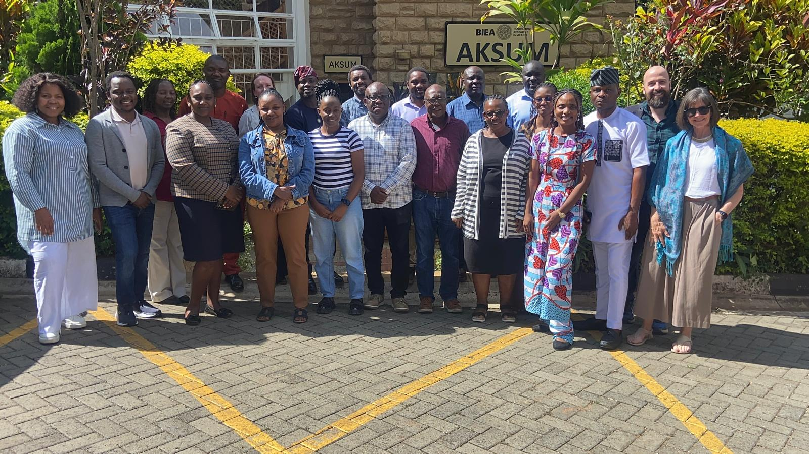

Warsha ya Uandishi ya British Academy kuhusu Siasa za Kimataifa barani Afrika
Warsha ya uandishi inayofadhiliwa na British Academy inayosaidia watafiti wanaofanya kazi kuhusu siasa za kimataifa za Afrika, iliyopangwa ndani ya mtandao wa IPIA.
Muhtasari wa Warsha
Warsha ya Uandishi ya British Academy kuhusu Siasa za Kimataifa barani Afrika inakusanya kundi lililochaguliwa la wasomi kufanya kazi kwa bidii juu ya makala yanayoandikwa, kupokea maoni kutoka kwa wenzao na wahariri wa majarida, na kushiriki katika vikao vilivyoundwa ili kuimarisha uandishi wa kitaaluma na mbinu za utafiti.
Washiriki wanaandaa makala ya kuwasilishwa kwa jarida la kimataifa na wanatumia mchakato wa warsha kuboresha hoja zao, mfumo na ushahidi. Kwa upande wa mada, warsha inazingatia siasa za kimataifa barani Afrika kwa upana: jinsi jamii za Afrika, wananchi, serikali, mashirika ya kikanda na ya kimataifa, na wahusika wasio wa kiserikali wanavyoishi na kuunda siasa za kimataifa.
Warsha inafadhiliwa kwa ukarimu na British Academy na inahitimika na mkutano wa siku tatu wa ana kwa ana katika British Institute in Eastern Africa (BIEA) huko Nairobi mnamo Aprili 2026.

Malengo
Warsha inafuatilia malengo matatu makuu:
- Kuchunguza jinsi historia ya kisiasa, kijamii na kiuchumi ya Afrika inavyoweza kuchangia maendeleo ya shule ya Afrika ya Mahusiano ya Kimataifa.
- Kukagua na kujadili mbinu za kuchunguza kimajaribio siasa za kimataifa barani Afrika.
- Kufikiria mikakati ya kuchapisha utafiti kuhusu mahusiano ya kimataifa ya Afrika katika majarida yanayoheshimika, na kushughulikia mahitaji ya mafunzo ya mbinu ili kusaidia kuziba pengo la uchapishaji.
Ratiba na Mpango wa Awali
- 18 Agosti 2025 – Mkutano wa kwanza wa mtandaoni wa utambulisho kwa wapangaji na washiriki
- 29 Septemba 2025 – Mkutano wa pili wa mtandaoni, majadiliano ya mahitaji ya mbinu na hali ya makala
- Novemba 2025 – Mkutano wa tatu wa mtandaoni, ugawaji wa washauri na masasisho ya hali ya makala
- Januari 2026 – Mikutano ya kibinafsi na washauri
- Februari 2026 – Uwasilishaji wa rasilimali za makala
- 1 Machi 2026 – Usambazaji wa rasilimali za makala kati ya washiriki
- Aprili 2026 – Warsha ya ana kwa ana katika British Institute in Eastern Africa (BIEA), Nairobi
Wapangaji

Dkt. Mwita Chacha (Mpelelezi Mkuu)
Dkt. Mwita Chacha ni Profesa Mshirika wa Mahusiano ya Kimataifa katika Idara ya Sayansi ya Siasa na Mafunzo ya Kimataifa, Chuo Kikuu cha Birmingham. Utafiti wake unazingatia uzalendo wa kikanda na ushirikiano wa kikanda, na makutano yake na matokeo ya kisiasa na ya usalama nchini.

Dkt. Florian G. Kern (Mpelelezi Mwenza)
Dkt. Florian G. Kern ni Profesa Mshirika katika Idara ya Utawala, Chuo Kikuu cha Essex. Utafiti wake unazingatia utawala barani Afrika. Kazi yake inayohusiana na IPIA inalenga hasa jinsi sera za kigeni zinavyoakisi maoni ya wananchi.

Eniye C. Dubakeme
Eniye C. Dubakeme ni Mhadhiri Msaidizi katika Idara ya Mahusiano ya Kimataifa na Diplomasia, Chuo Kikuu cha Baze. Utafiti wake unazingatia mambo ya kigeni na utawala kwa ajili ya usalama barani Afrika.

Dkt. Consolata Raphael Sulley
Dkt. Consolata Raphael Sulley ni Mhadhiri wa Sayansi ya Siasa katika Chuo Kikuu cha Dar es Salaam, Tanzania. Ana shahada ya uzamivu katika Sayansi ya Siasa kutoka Chuo Kikuu cha Leipzig, Ujerumani. Amefanya utafiti kuhusu demokrasia, uchaguzi, siasa za vyama, jinsia, sera za umma, utawala wa serikali za mitaa, haki za binadamu na ubinadamu.

Dkt. Israel Nyaburi Nyadera
Israel Nyaburi Nyadera ni Mhadhiri katika Chuo cha Ulinzi wa Taifa, Chuo Kikuu cha Ulinzi wa Taifa huko Nairobi, Kenya. Ni msomi wa baada ya uzamivu wa Serikali ya Uswisi katika Kituo cha Migogoro, Maendeleo na Kulinda Amani, Geneva Graduate Institute. Ana shahada ya uzamivu katika Sayansi ya Siasa kutoka Chuo Kikuu cha Macau, shahada ya uzamili katika Uchanganuzi wa Migogoro na Utatuzi kutoka Chuo Kikuu cha George Mason, shahada ya uzamili katika Mahusiano ya Kimataifa kutoka Middle East Technical University, na shahada ya kwanza katika Sayansi ya Siasa kutoka Chuo Kikuu cha Nairobi.

Dkt. Alecia Ndlovu
Dkt. Alecia Ndlovu ni mwanasiasa na Mhadhiri katika Chuo Kikuu cha Cape Town, akibobea katika Uchumi wa Kisiasa wa Kulinganisha na wa Kimataifa pamoja na mbinu za utafiti wa kiidadi. Utafiti wake unazingatia taasisi za kisiasa na maendeleo katika uchumi wa Afrika wenye rasilimali nyingi. Kwa sasa anahariri pamoja Encyclopedia of African Politics (Edward Elgar Publishing) na anaongoza mradi unaofadhiliwa na Worldwide Universities Network kuhusu uwajibikaji wa madini na maendeleo barani Afrika.
Washiriki
Warsha inakusanya watafiti wa mwanzo na wa kati ya kazi wanaofanya kazi kuhusu mada nyingi za siasa za kimataifa barani Afrika. Hapa chini ni washiriki na miradi yao ya utafiti.

Andre Ben-Moses Akuche
Mtafiti wa mwanzo wa kazi katika mahusiano ya kimataifa, mwenye hamu katika diplomasia, siasa za nishati, sera za kigeni, mashirika ya kimataifa na utatuzi wa migogoro.
Mada ya utafiti: Mpito wa nishati duniani na diplomasia ya gesi asilia ya Nigeria.

Caroline Shisubili Maingi
Mhadhiri katika Mafunzo ya Kimataifa na Falsafa na mtahiniwa wa uzamivu katika Mahusiano ya Kimataifa, akifanya kazi kuhusu ushirikiano wa kikanda, sera za kigeni na falsafa ya kisiasa.
Mada ya utafiti: Kuimarisha ushiriki wa wananchi kwa ajili ya ushirikiano mzuri ndani ya Jumuiya ya Afrika Mashariki (EAC).

Dkt. Kingsley Ogunne
Mtafiti wa baada ya uzamivu anayebobea katika uchumi wa kisiasa wa afya, siasa za afya duniani na haki ya tabianchi, mwenye kazi kuhusu umakala wa Afrika katika utawala wa afya duniani.
Mada ya utafiti: Mikakati ya kidiplomasia ya mataifa ya Afrika katika utawala wa afya duniani.

Fatou Bintou Niang
Mtahiniwa wa uzamivu katika Sayansi ya Siasa ambaye kazi yake inashughulikia matibabu ya afya ya ulimwengu wote, jinsia, ufeministi, mahusiano ya kimataifa na urithi wa utamaduni.
Mada ya utafiti: Diplomasia ya kikanda na amani ndani ya ECOWAS, ukizingatia jinsi hatua za kimataifa zinavyounda sera.

Dkt. Mary Baremirwe Bekoreire
Mhadhiri na mratibu wa shahada za juu mwenye uzoefu mrefu katika utafiti na uongozi wa kimkakati, akizingatia utawala, sera za umma, jinsia na maendeleo ya jamii.
Mada ya utafiti: Ushawishi wa kijiografia wa Sino-Magharibi na mienendo ya migogoro katika mataifa wanachama wa Jumuiya ya Afrika Mashariki.

Dkt. Caroline Kathure Gatobu
Mhadhiri na mtafiti ambaye kazi yake inachunguza usalama, amani, migogoro na maendeleo katika Pembe ya Afrika, ukisisitiza uhuru na usalama wa binadamu.
Mada ya utafiti: Jukumu la Kenya katika utulivu wa kikanda na maendeleo katika Pembe ya Afrika.

Alfred Makotsi
Mhadhiri msaidizi na mtahiniwa wa uzamivu katika Diplomasia na Mahusiano ya Kimataifa, mwenye hamu katika diplomasia, demokrasia na uchunguzi wa uchaguzi.
Mada ya utafiti: Uchunguzi wa kimataifa wa uchaguzi na uimarishaji wa demokrasia Kenya.

Dkt. Muhidin Shangwe
Mhadhiri katika Mahusiano ya Kimataifa ambaye kazi yake inazingatia mahusiano ya kimataifa ya Afrika, hasa mahusiano ya Afrika–China na ushindani wa nguvu kuu barani.
Mada ya utafiti: Majibu ya Afrika Kusini kwa vita nchini Ukraine na Gaza kama mfano wa umakala wa Afrika.

Dkt. Chikodiri Nwangwu
Mtafiti wa baada ya uzamivu na profesa mseniore mwenye hamu katika uchumi wa kisiasa wa Afrika, amani na migogoro, uchaguzi na harakati za kijamii.
Mada ya utafiti: Kurudi nyuma kwa demokrasia na majibu ya ECOWAS kwa mapinduzi ya kijeshi Afrika Magharibi.

Dkt. Dikeledi Mokoena
Mwanasiasa ambaye kazi yake inashughulikia uchumi wa kisiasa wa kike, ukoloni mamboleo, ufeministi wa Afrika na siasa za maendeleo barani Afrika.
Mada ya utafiti: Uchanganuzi wa kike wa kuondoa ukoloni wa sera ya uchumi ya Marekani barani Afrika, ukizingatia Afrika Kusini.

Tendai Ganduri
Mtahiniwa wa uzamivu katika Mafunzo ya Vyombo vya Habari mwenye hamu katika binadamu wa kidijitali na siasa za mabadiliko ya tabianchi Zimbabwe na Afrika Kusini.
Mada ya utafiti: Diplomasia ya tabianchi na mjadala wa kidijitali kuhusu COP26 katika maeneo ya mtandaoni ya Zimbabwe na Afrika Kusini.

Dkt. Oluwatosin Ruth Ifaloye
Mhadhiri katika Mahusiano ya Kimataifa akibobea katika haki ya mpito, ushirikiano wa wadau na siasa za kimataifa za Afrika.
Mada ya utafiti: Kulokuza haki ya mpito Gambia kupitia ushirikiano wa wadau na kanuni za kimataifa.